Making video — the reconstructed set
Before diving into the pipeline, here's the end result: a walkthrough of the 3D courtyard we rebuilt from the song footage.
Watch on YouTube — making-of video showing the navigable 3D set.
This project starts from one music video. The courtyard set in Pinga from Bajirao Mastani — stone arches, lanterns, a big tree, performers dancing — is beautiful on screen. We wanted something ambitious: rebuild that entire set in 3D so you could move a virtual camera through it, not just stare at one photo.
Watch on YouTube — the original song; the courtyard set we reconstructed appears throughout.
Watch for the hard cuts, close-ups on the performers, and how the camera never sits still long enough to give you a clean multi-view scan of the environment. That's exactly the problem we're solving.
Everything shown here comes from our pinga_set/ output folder, built with HY-World 2.0 (HunyuanWorld). Pipeline code lives in blog_informtion/code/ — HY-World stages in code/stages/, panorama generator in code/panogen/.
The Goal
Goal: One coherent 3D environment reconstructed from an entire song.
What we actually have as input: Hundreds of unrelated 2D frames, most of which are useless for geometry.
| What we need | What a song gives us |
|---|---|
| Overlapping views of the same walls | Hard cuts to a completely different angle |
| Static scene geometry | Actors moving through every shot |
| Smooth camera motion | Jump cuts, zooms, shake |
| Full set visible | Close-ups where you can't even see the floor |
So the real question became:
Forget reconstructing every frame. Can we find a handful of frames that, together, show us the whole set?
That shift in thinking is basically the whole project.
Starting From Movie Frames
A movie song isn't a clean 360° capture. It's a heavily edited music video — hard cuts, close-ups on actors, camera shake, zooms, and shots where 80% of the frame is a person, not the set. The original frames are not sufficient for reconstruction because most of the scene is observed from disjoint viewpoints with incomplete geometry.
The standard reconstruction pipeline
The generic, traditional way to build a 3D set from video looks like this:
COLMAP finds correspondences across frames, estimates where the camera was for each shot, and builds a sparse 3D point cloud. Those poses then feed into NeRF or 3DGS, which densify the representation into something you can render from arbitrary viewpoints. On a smooth walk-through video — a real-estate tour, a drone orbit, a handheld scan — this works well.
Why COLMAP breaks on song footage
COLMAP assumes consecutive frames share overlapping views of the same geometry. A Bollywood song violates every assumption in that chain:
- Hard cuts jump to a completely different angle with zero overlap
- Close-ups fill the frame with a face, not the set
- Moving actors break static-scene correspondence
- Zooms and shake add motion that isn't smooth camera travel
We never got a usable sparse reconstruction from raw Pinga footage — there's no COLMAP output in pinga_set. Feature matching fails when shots don't overlap, and even the frames that do match often disagree because the scene content changed between cuts.
COLMAP isn't broken. It's built for continuous capture. Feeding it an edited music video without preprocessing is asking it to solve a problem it was never designed for.
Learning-based alternatives — VGGT and Depth Anything V3
Knowing COLMAP wouldn't work out of the box, we went deeper into learning-based geometry methods that don't rely on explicit feature matching.
VGGT (Visual Geometry Grounded Transformer) can predict camera poses and depth directly from images, skipping traditional SfM. We ran it on the raw Pinga song. Results were bad — shots don't overlap, cuts break temporal correspondence, and half the frames are face close-ups. No coherent camera trajectory emerged.
Depth Anything V3 was the next attempt — dense monocular depth without needing multi-view overlap. It produces reasonable per-frame depth maps, but depth alone doesn't give you a unified 3D set. Without consistent camera poses tying the frames together, each shot lives in its own coordinate frame. The fundamental problem remains: the views are too sparse and too non-overlapping to fuse into one scene.
Both COLMAP-style SfM and modern learned geometry models fail for the same reason — not enough shared visual evidence across shots. The bottleneck isn't the reconstruction algorithm. It's the input footage.
Why a single generated view isn't enough either
Even world-generation models that skip multi-view input entirely — like HY-World 2.0 with a single image — hit the same wall from a different angle. One frame from the song might show you the front arch and nothing else. The back of the courtyard? Never seen. The left wall? Blocked by a dancer. Run world generation on that and the model just makes stuff up — and it'll contradict the next shot in the song.
We need four major regions of the set (front, sides, back) to have real visual evidence before any 3D model touches it. We ran both a single-image and a multi-image approach on the same Pinga courtyard to prove this:
1 image (songs_set/) | ~4 images (pinga_set/) | |
|---|---|---|
| Input | One song frame → HY-Pano 2.0 | ~4 frames → manual stitch |
| Panorama | AI hallucinates unseen sides | Real coverage from multiple angles |
| Downstream 3D | Full pipeline, weak geometry | Full pipeline, real evidence |
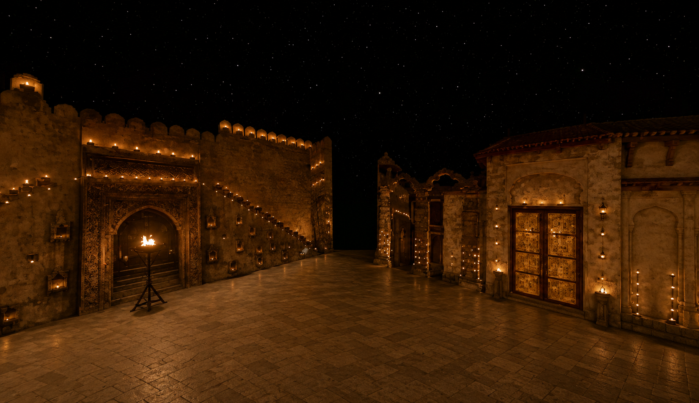
songs_set/side_view.png

pinga_set stitchEvery approach we tried — COLMAP, VGGT, Depth Anything V3, single-image generation — fails unless someone first curates the input. The next section is about how we did that.
Creating Better Reference Views
We stopped asking "can AI reconstruct the whole song?" and started asking "what's the minimum set of good observations we need?" The honest part: humans pick the frames and verify the geometry. Models handle the scale work after that.
Step 1 — Picking the right frames
Automatic frame selection failed — too many cuts, too many actor shots. So we manually picked about four complementary views that together cover the courtyard from different angles.


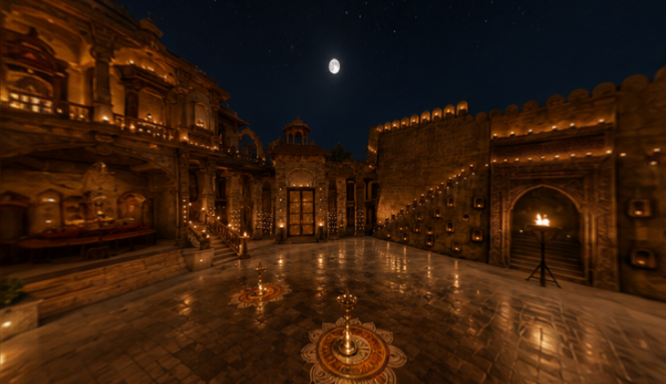
Each bin gets its own camera trajectories later. Unrelated song shots never get mixed together — that's the whole point of binning.
Step 2 — Building the panorama
The original framing was often too tight or actor-centric. We therefore introduced an intermediate step to obtain wider, more spatially useful references before stitching.
- Pick ~4 frames from the song — each showing a different part of the courtyard
- Generate wider horizontal views where the original framing was too tight or actor-centric
- Run MoGe v2 for dense metric depth on each view
- Stitch point clouds by hand — we verified alignment ourselves instead of trusting automatic fusion
- Inpaint remaining gaps in the stitched equirectangular panorama
Panorama outputs — same next step, very different starting point
Both panoramas went through the same HY-World 2.0 pipeline. The difference is what went in.
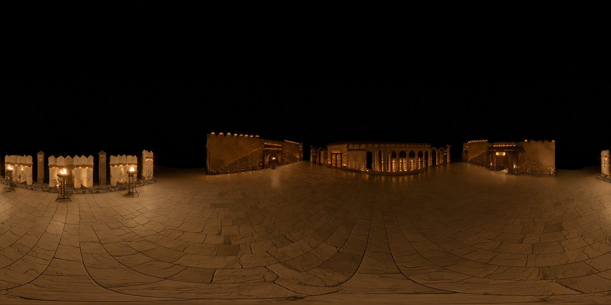
songs_set/panorama.png
pinga_set/panorama.pngLook at the single-image panorama — it looks like a courtyard at first glance. But large sections were never in the original frame. HY-Pano invented the back wall, the opposite side, details that may not match other shots in the song. The 4-side version has photographic evidence behind each direction.
| 1 image (HY-Pano) | ~4 images (custom stitch) | |
|---|---|---|
| What's real | One viewing angle | Front, sides, back observed |
| What's generated | ~75% of the panorama | Only gaps between stitched views |
| Geometry | Depth guessed from hallucinations | Depth from MoGe on real frames |
| Matches the song? | Often contradicts other shots | Built from frames picked from the song |
| Good for a quick test? | Yes | — |
| Good for set reconstruction? | No — we abandoned this | Yes — this is what we used |
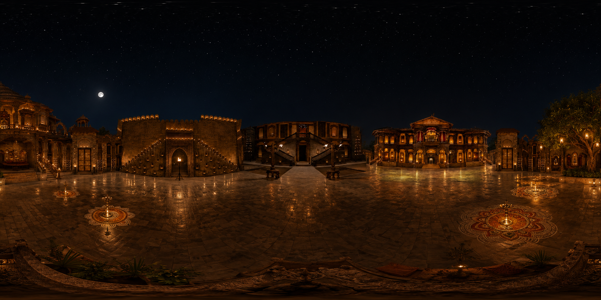
pinga_set/panorama.pngThe quick-test alternative — single frame through HY-Pano 2.0 (code/panogen/) — lives in songs_set/. Fine for prototyping; not what we used for the final reconstruction.
From 2D Images to a 3D World
Once we have a trustworthy panorama, HY-World 2.0 takes over. The transition follows a clear chain:
HY-World samples views from the panorama
Stage 1 (traj_generate.py) samples orbit and polar views to build depth banks and plan camera paths.
Cardinal views (used as reference frames for trajectories):

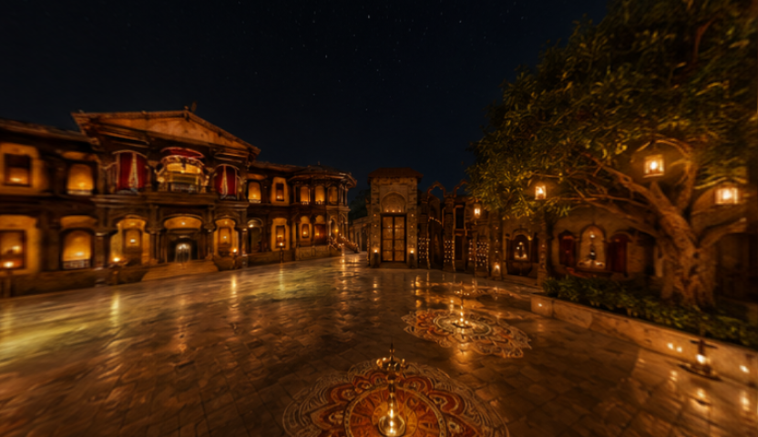

Orbit + polar samples (27 horizontal + 16 vertical views for depth coverage):

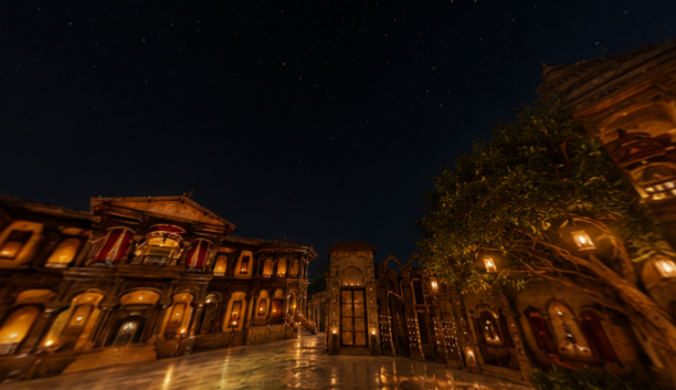
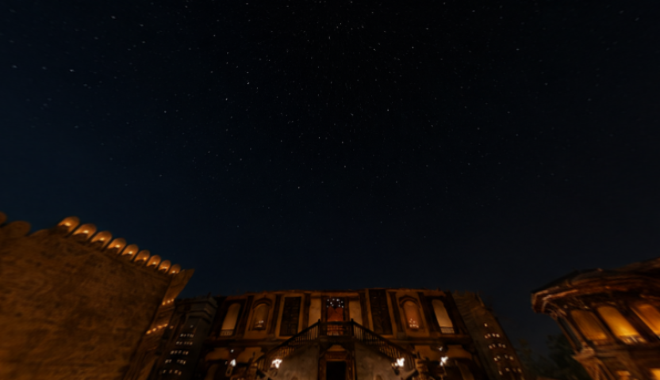
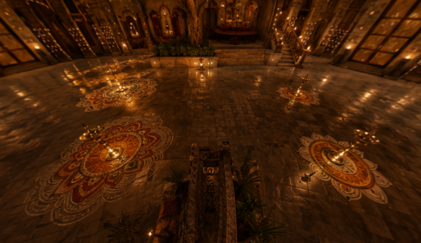
From here HY-World also builds a mesh, detects objects, and plans 33 camera trajectories across the scene.
Scene Reconstruction
Segmentation + masks
HY-World runs a VLM to figure out what's in the scene — tree, pillars, benches, arches, etc. That drives object-targeted camera paths ("fly toward the tree").
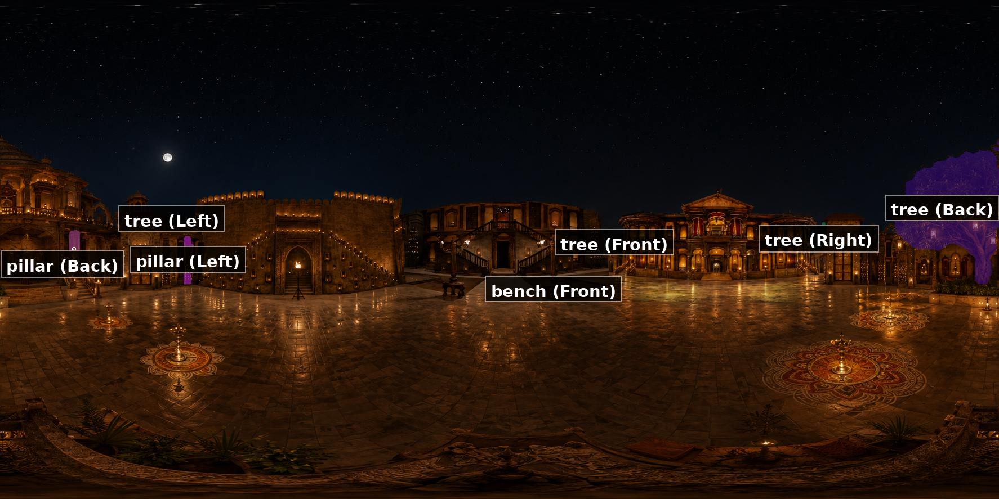
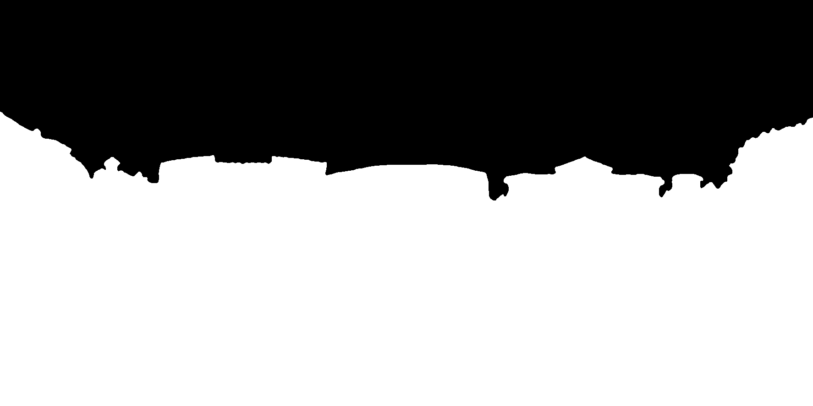
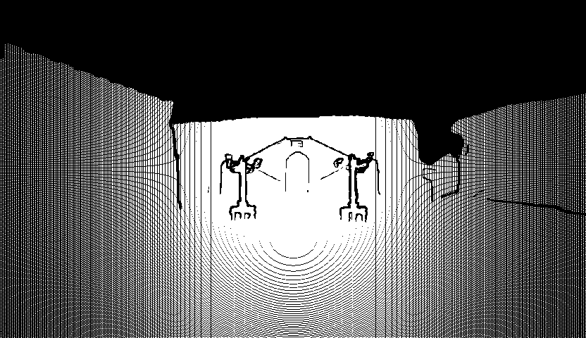
Detected objects: tree, building, door, statue, bench, fence, lamp, sheds, staircase, pillar, trash can.
It gets worse downstream
Same pipeline, same camera path (view0/traj0) — only the panorama input changed. Garbage in, garbage out — but it compounds. A weak panorama poisons depth, mesh, trajectories, and every inpainted frame.
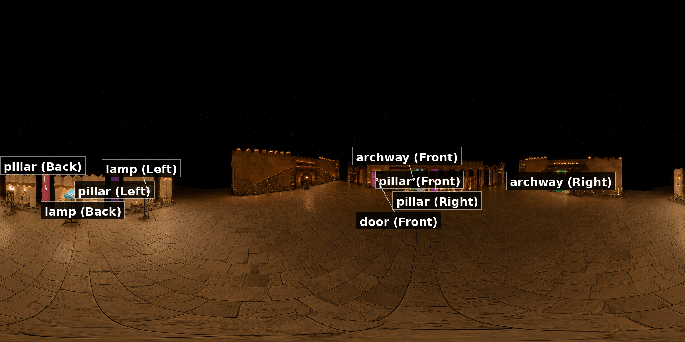

1 image → WorldStereo
songs_set/view0/traj0
4 images → WorldStereo
pinga_set/view0/traj0
Camera trajectories
At this point we have a 3D mesh of the courtyard. What we actually need is video: a sequence of frames shot from many different camera positions, as if someone walked through the set with a camera. For Pinga, HY-World planned 33 trajectories total — 693 camera poses (33 × 21 frames).
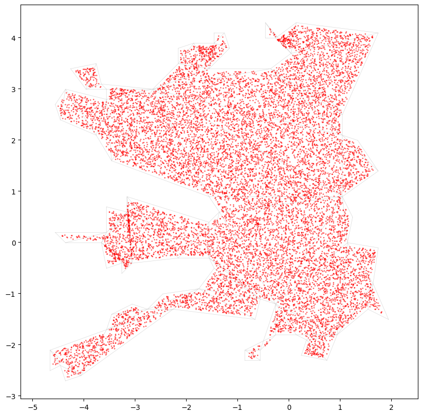
Phase A — Simple pans from the panorama
HY-World splits the input panorama into three cardinal views and generates simple rotation paths from each one. Each view bin gets up to 3 trajectories:
| Trajectory | Motion | What you'd see |
|---|---|---|
traj0 | Pan right (~120°) | Camera rotates right from the reference frame |
traj1 | Pan left (~120°) | Camera rotates left |
traj2 | Tilt up / aerial | Camera lifts and looks down slightly |
That's 9 trajectories (3 views × 3 moves). Paths are checked against the mesh so the camera doesn't clip through geometry.
Phase B — Finding objects to look at (VLM + SAM3)
Panorama image
↓
Qwen3-VL (VLM) — "list the objects you'd navigate toward"
↓ → objects.json (tree, pillar, bench, building, door…)
SAM3 segmentation — draw a mask around each object
↓ → target_camera.json (2D/3D position, direction, size per object)
Navmesh path planning — compute routes on the walkable surface
For Pinga, the top-ranked object was the tree (score 0.92, direction: Back). Pillars and benches ranked next.
Phase C — Navmesh path planning (four modes)
| Mode | Question it asks | Output folders | Count (Pinga) |
|---|---|---|---|
| Surround | "Can we orbit around this object?" | target_tree_0, target_pillar_1… | 8 |
| Exploration | "What if we wander in 8 directions?" | wonder_0, wonder_1, wonder_7 | 6 |
| Reconstruct | "Can we revisit under-covered areas?" | reconstruct_1, reconstruct_3… | 10 |
| Target | "Walk straight toward each object" | Planned & saved, not rendered | — |
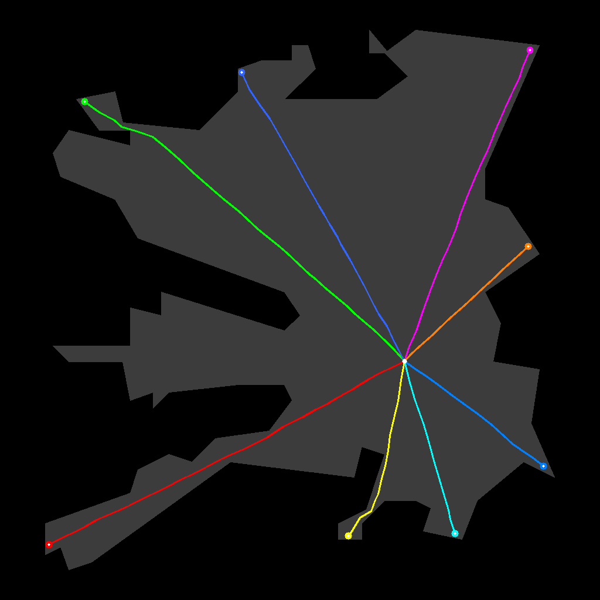
8 sectors → wonder_*
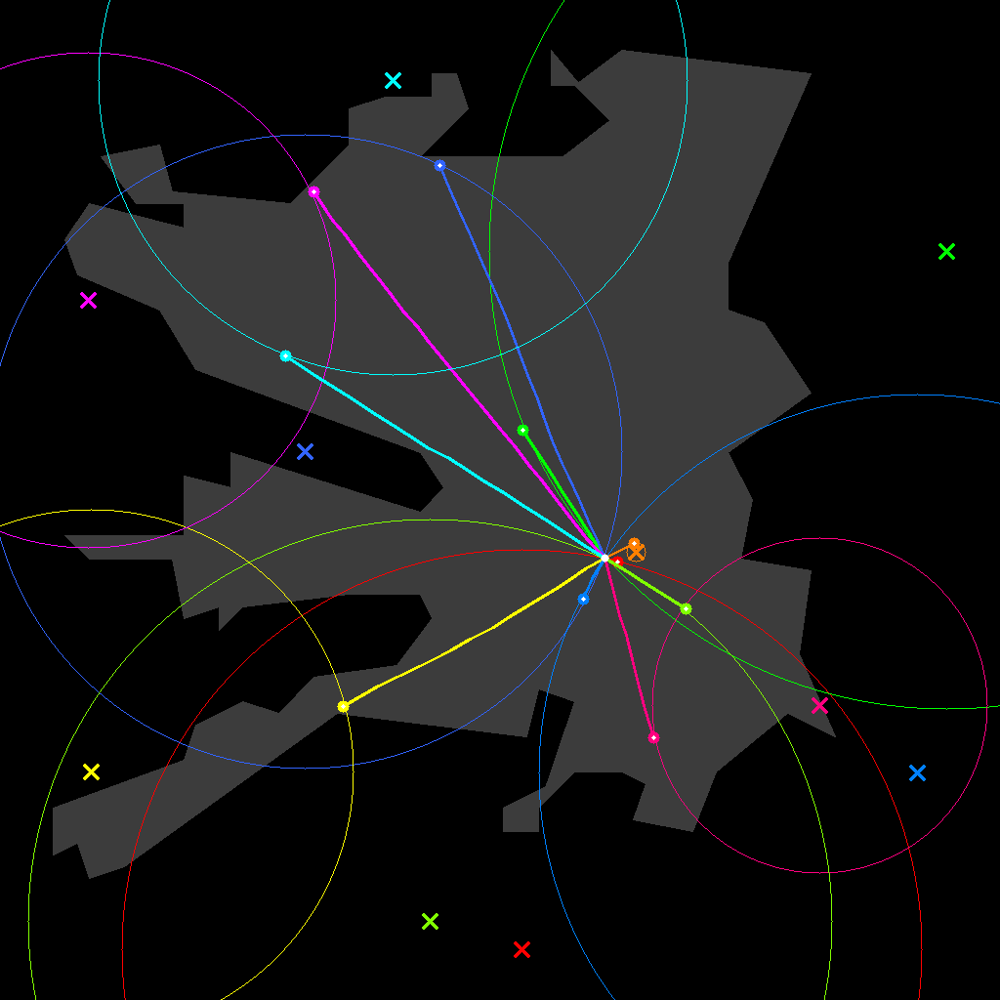
reconstruct_*
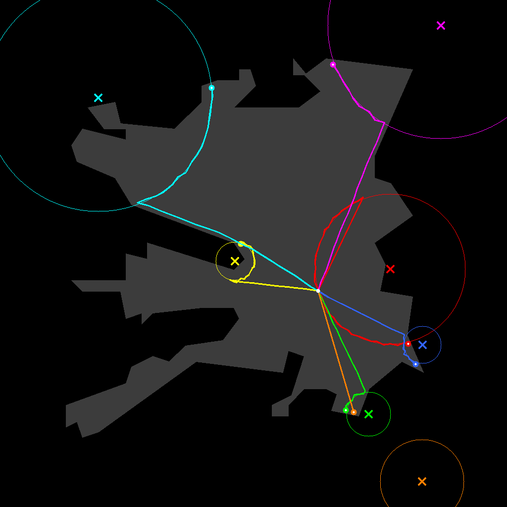
target_* folders
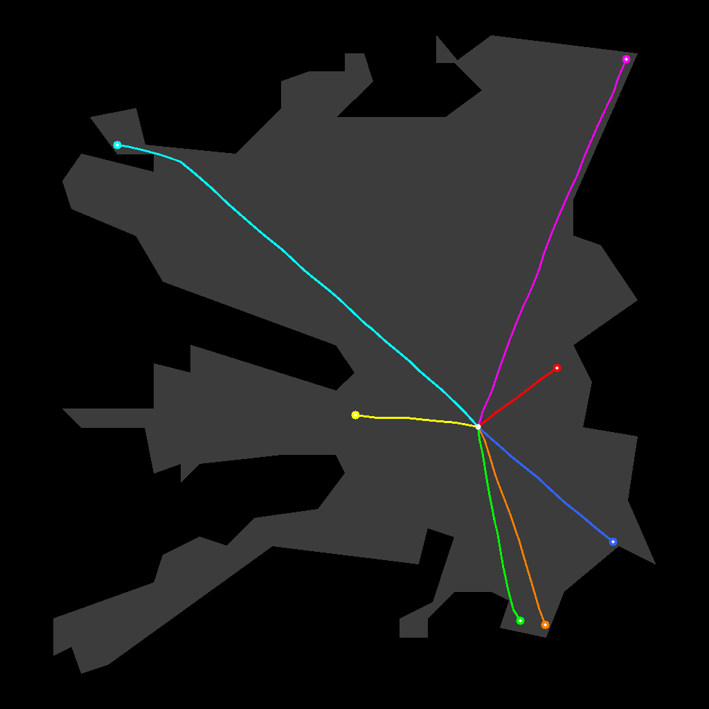
planned, not rendered
What a trajectory folder contains
render_results/view0/traj0/ ├── start_frame.png ← first frame (conditioning image) ├── camera.json ← 21 w2c poses + intrinsics ├── render.mp4 ← point-cloud splat video (Stage 2) ├── render_mask.mp4 ← white = holes to fill ├── worldstereo-memory-dmd_result.mp4 ← inpainted result (Stage 3) ├── traj_caption.json ← VLM-written scene description └── memory_inputs/ ← panorama references WorldStereo used
Mechanical pipeline — how 33 trajectories are produced
All of this is produced inside traj_generate.py in two major stages. Inventory: 9 cardinal pans + 8 object orbits + 10 reconstruct paths + 6 exploration paths = 33, across 16 folder groups under pinga_set/render_results/.
Step 0 — Shared setup (before any trajectory exists):
panorama.png → MoGe depth prediction → full_depth_prediction.pt → global point cloud + mesh → global_pcd.ply, global_mesh.ply → pano_bank (27 orbit samples) → render_results/pano_bank/ → polar_bank (16 elevation) → render_results/polar_bank/
The navmesh is built from global_mesh.ply using Recast: mesh surface → walkable triangles → dense graph (NavMeshGraph, sample spacing 0.05 m). Every walking trajectory is constrained to this graph. The camera origin is (0, 0, 0).
Stage A — Cardinal rotation trajectories (9 paths): The equirectangular panorama is split into 3 horizontal look directions at 120° spacing (split_view_num=3). For each split, HY-World renders a pinhole start_frame.png (832×480), projects the global PCD, and applies three motion templates: right-rotation, left-rotation, up-right-aerial. get_c2w() interpolates 20 intermediate poses and queries a KD-tree on the global mesh — trajectories that would clip through geometry are discarded.
Stage B — Navmesh trajectories (24 paths): Qwen3-VL lists objects → SAM3 masks → depth lift to 3D anchor points. Four path generators run from the origin via Dijkstra. Every navmesh polyline is converted via B-spline fit (smoothing 0.2–0.5), arc-length resample to nframe=21, and camera frames built with look-at toward object center (surround/reconstruct) or path tangent (exploration).
| Mode | Filter | Pinga result |
|---|---|---|
| Exploration | Keep top-3 most diverse paths (wonder_topk=3) | 8 candidates → 3 groups (wonder_0, wonder_1, wonder_7) |
| Surround | Drop trajectories too similar to existing ones (traj_sim_threshold) | 5 object groups, 8 ground paths |
| Reconstruct | FPS diversity selection (recon_topk=5) | 10 pairs → 5 groups, 10 paths |
| Target | Planned and saved to navmesh maps | Not rendered in this run |
Unlike view* (fixed cardinal slice), navmesh groups get a fresh panorama slice at the trajectory's starting orientation. Some groups also get a second variant (traj1): aerial lift for target_* and wonder_*, e-loop orbit at endpoint for reconstruct_*.
Complete inventory — all 33 output trajectories
Cardinal rotations (9) — camera fixed, rotation only:
| Group | Traj | camera.json type |
|---|---|---|
view0/, view1/, view2/ | traj0, traj1, traj2 | right-rotation, left-rotation, up-right-aerial |
Surround / object orbit (8) — navmesh walk around VLM-detected object:
| Folder | Object | Trajs |
|---|---|---|
target_tree_0/ | tree, Back | traj0 |
target_tree_4/ | tree, Right | traj0, traj1 (aerial) |
target_pillar_1/ | pillar, Left | traj0, traj1 (aerial) |
target_pillar_2/ | pillar, Back | traj0, traj1 (aerial) |
target_bench_3/ | bench, Front | traj0 |
Reconstruct (10) — navmesh walk to under-covered region:
| Folder | Target | Trajs |
|---|---|---|
reconstruct_1/ | tree, Right | traj0 (approach), traj1 (e-loop) |
reconstruct_3/ | structural void | traj0, traj1 |
reconstruct_4/ | tree, Front | traj0, traj1 |
reconstruct_8/ | pillar, Back | traj0, traj1 |
reconstruct_9/ | pillar, Left | traj0, traj1 |
Exploration (6) — outward wander per compass sector:
| Folder | Trajs |
|---|---|
wonder_0/, wonder_1/, wonder_7/ | traj0 (ground), traj1 (aerial) |
All poses are aggregated into render_results/cameras.glb and cameras_navi.glb for 3D inspection. Script: code/stages/01_traj_generate.py · Navmesh: hyworld2/worldgen/src/navi_utils.py
Filling the holes (WorldStereo inpainting)
HY-World renders each camera path by splatting the point cloud into video frames. Problem: the point cloud is sparse. Large chunks of every frame are empty gray holes. WorldStereo tries to fill those holes using the panorama as memory.
The good case — view0 (cardinal view, real reference frame):
① Raw render (holes expected)
② Hole mask (white = missing)
③ WorldStereo result
The bad case — wonder_7 (exploration, PCD-only start frame):
① Raw render
② Hole mask (much bigger)
③ WorldStereo result (weaker)
The mask file for wonder_7 is ~2.7× larger than view0's — that's 50–68% of pixels missing in many trajectories. WorldStereo treats the mask as soft guidance (ControlNet-style), not hard inpainting. Combined with sparse geometry and only four panorama memory views, some gray patches survive.
Training the final 3D scene (3DGS)
WorldStereo outputs get fed into a 3D Gaussian Splatting trainer — 787 frames, depth maps, normals, 8000 training steps. Output: a navigable radiance field you can render from any angle.
| Output | Size | What it is |
|---|---|---|
global_mesh.ply | 82 MB | Stage-1 mesh (primary mesh for now) |
point_cloud_7999.ply | 123 MB | Trained 3DGS point cloud |
ckpt_7999_rank0.pt | 171 MB | Training checkpoint |
3DGS frame count: 33 trajectories × 21 frames = 693, plus 54 pano_bank + 40 polar_bank = 787 images in gs_data/images/.
Building the Movie Set
Individual reconstructed elements become a coherent movie environment through a staged assembly. Here's the progression:
| Stage | Script | What happens |
|---|---|---|
| 1 | traj_generate.py | Depth, mesh, navmesh, trajectories |
| 2 | traj_render.py | Point-splat conditioning videos |
| 3 | video_gen.py | WorldStereo inpainting |
| 4 | gen_gs_data.py | Prepare 3DGS training data |
| 5 | world_gs_trainer | Train for 8000 steps |
| 6 | extract_mesh.py | (not run yet) |

Reference Panorama
4-side stitched equirectangular input from real song frames
Scene Understanding
11 detected objects drive camera path planning
camera.json (21 poses)
↓ traj_render.py
render.mp4 + render_mask.mp4 ← gray holes where PCD is sparse
↓ video_gen.py (WorldStereo)
worldstereo-memory-dmd_result.mp4 ← inpainted video
↓ gen_gs_data.py
787 training frames for 3DGS
Run it: pinga_set/run_mesh_pipeline.sh — see code/ for all scripts.
Challenges and What Didn't Work
Every failure pushed us toward better input preparation rather than a bigger model. The pattern is consistent across the project.
| Thing we tried | What happened |
|---|---|
| COLMAP on raw footage | No usable sparse reconstruction — shots don't overlap |
| VGGT on raw song | Bad reconstruction — cuts kill correspondence |
| Depth Anything V3 on raw song | Per-frame depth OK, but views too sparse and non-overlapping to fuse |
| Single-frame HY-World | Would hallucinate most of the set |
| Raw PCD without panorama | Trajectories worked, inpainting quality was poor |
| WorldStereo on sparse trajectories | Holes remain — mask is soft guidance, not hard fill |
| DMD fast mode (4 denoising steps) | Fast but lower quality |
| Mesh extraction (Stage 6) | Not executed yet |
Single-image vs. multi-view: a concrete example
What we tried
Run the full HY-World pipeline on a single song frame expanded via HY-Pano 2.0.
What happened
The panorama looked plausible but ~75% was hallucinated. Downstream segmentation and WorldStereo outputs contradicted other shots in the song.
Why it was insufficient
Depth was guessed from invented geometry. A weak panorama poisons every downstream stage.
What we changed
Manual frame picking, wider view generation, MoGe depth, and hand-verified point-cloud stitching to build a panorama with photographic evidence in each direction.
The hardest part wasn't picking a model. It was designing a pipeline where each tool does one thing it's actually good at — humans pick frames and verify geometry, MoGe gives dense depth, HY-World builds mesh and plans paths, WorldStereo fills holes, 3DGS turns it all into a renderable scene.
Final Result
Everything below is real output from pinga_set/.
View1 — second cardinal bin
Target tree — VLM picked the tree, camera flies toward it
Good vs. bad inpainting
✅ view0 — real reference frame, fewer holes
⚠️ wonder_7 — PCD-only start, many holes remain
3D assets
Open in MeshLab or CloudCompare:
media/08_final/global_mesh.ply(82 MB)media/08_final/point_cloud_7999.ply(123 MB)
What Comes Next
Stage 6 (extract_mesh.py) — extracting a mesh from the 3DGS checkpoint — wasn't run yet. The gs_output/mesh/ directory doesn't exist. The primary mesh for now remains the Stage-1 global_mesh.ply (82 MB).
No single model eats a Bollywood song and spits out a 3D set. A chain of imperfect tools, with humans at the critical decision points, gets you most of the way there — but mesh extraction from the trained radiance field is the obvious next step.
Checkpoints & models
Weights live in pinga_set/ — symlinked under media/checkpoints/ (not duplicated).
| Artifact | Path | Size | Used for |
|---|---|---|---|
| Panorama depth | render_results/full_depth_prediction.pt | 100 MB | Stage 1 init |
| 3DGS checkpoint | gs_output/ckpts/ckpt_7999_rank0.pt | 171 MB | Final radiance field |
| Sky depth cache | gs_output/sky_depth_cache.pt | 522 MB | Training |
| Global mesh | render_results/global_mesh.ply | 82 MB | Navigation / rendering |
| 3DGS point cloud | gs_output/ply/point_cloud_7999.ply | 123 MB | Visualization |
Other external models (downloaded at runtime): Qwen3-VL-8B (trajectory planning), WorldStereo (inpainting), HunyuanWorld-Mirror (depth bank), MoGe v2 (upstream depth).
Training config: pinga_set/gs_output/cfg.yml · Pipeline runner: code/run_mesh_pipeline.sh · Panorama generator: code/panogen/
All media from pinga_set/. Code in code/. Raw movie frames and upstream keyframe picks aren't in this repo — only the HY-World pipeline outputs.
References
- HY-World 2.0 World generation, mesh, trajectories, and inpainting pipeline github.com/Tencent-Hunyuan/HY-World-2.0
- MoGe Monocular metric depth estimation for panorama stitching github.com/microsoft/MoGe
- VGGT Visual Geometry Grounded Transformer — learned geometry baseline github.com/facebookresearch/vggt
- 3D Gaussian Splatting Real-time radiance field rendering and final scene training github.com/graphdeco-inria/gaussian-splatting